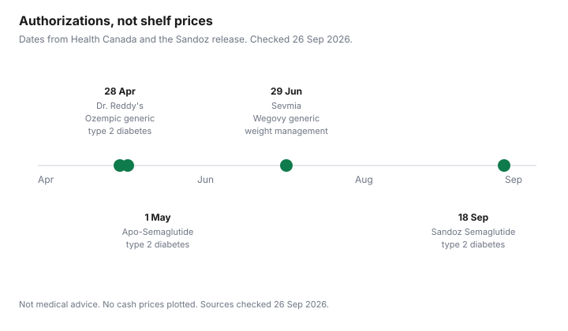

Healthcare · Canada
Generic Semaglutide in Canada (2026): What the Generic Ozempic Approvals Mean for Your Pharmacy Bill
Health Canada authorized more than one generic semaglutide in 2026. That is a regulatory fact. It is not a promise that your pharmacy has stock, that your plan will pay, or that a switch is right for you. This page is a shopping and coverage checklist for Canadian households. It is not medical advice. Do not start, stop, or swap a medicine because of a headline. Talk to the prescriber who wrote the prescription and to the pharmacist who will fill it.
Key takeaways
- 28 Apr 2026: Health Canada authorized Dr. Reddy's generic semaglutide injection, a generic of Ozempic, for once-weekly treatment of adults with type 2 diabetes.
- 1 May 2026: a regulatory decision summary authorized Apo-Semaglutide, also a generic of Ozempic for adult type 2 diabetes. 29 Jun 2026: Health Canada authorized Sevmia, Apotex's generic of Wegovy, for chronic weight management.
- 18 Sep 2026: Sandoz Canada said Health Canada authorized Pr Sandoz Semaglutide, a generic of Ozempic for adult type 2 diabetes. The release said commercialization was still being prepared. No launch price was on that release.
- No dated retailer page opened for this guide confirmed a cash price. Ask the pharmacy for drug cost, dispensing fee, and pen strength as separate lines. A plan may pay only the listed generic.
- CTV News Montreal reported on 17 Jun 2026 that Quebec pharmacists could not meet demand. Health Canada's 21 Jan 2026 advisory says to buy prescription drugs only from a licensed pharmacy and not to buy unauthorized GLP-1 products.
What Health Canada approved in 2026 (Dr. Reddy's in April, Apotex in May, Sandoz in September) and for which indication
Read the indication before you read a price. The 28 Apr 2026 Health Canada news release says the department authorized a generic semaglutide injection filed by Dr. Reddy's Laboratories. It is a generic version of Ozempic. The release says it is indicated for the once-weekly treatment of adult patients with type 2 diabetes to manage blood sugar levels. The release also said Health Canada was reviewing other generic semaglutide submissions. It did not print a pharmacy price.
The second diabetes generic is Apotex. Health Canada's May 2026 news release says the department authorized a second generic semaglutide injection, filed by Apotex, also a generic of Ozempic for the same adult type 2 diabetes use. The Drug and Health Products Portal regulatory decision summary for Apo-Semaglutide Injection, opened 26 Sep 2026, dates the decision 1 May 2026. The sponsor is Apotex Inc. The summary says the submission was for once-weekly treatment of adult patients with type 2 diabetes mellitus to improve glycemic control. Drug identification numbers issued on that summary are 02568020 and 02568012. The product is prescription only.
A different indication arrived in June. The Health Canada release dated 29 Jun 2026 says the department authorized a first generic semaglutide injection for weight loss. The product is Sevmia, filed by Apotex, a generic of Wegovy. The release says it is indicated for once-weekly treatment of patients 12 years and over, as a supplement to a reduced-calorie diet and increased physical activity for chronic weight management. The release calls it the third generic semaglutide product Health Canada had approved, and it points back to the 1 May 2026 Apotex diabetes approval and the 28 Apr 2026 first approval. Sevmia is not the same notice as Apo-Semaglutide.
Sandoz is the September diabetes generic. The CNW release from Saint-Hubert, dated 18 Sep 2026, says Health Canada granted authorization to market Pr Sandoz Semaglutide, a generic of Ozempic, for once-weekly treatment of adult patients with type 2 diabetes to improve glycemic control, in combination with lifestyle changes and other antidiabetic agents. The notice of compliance described on that release covers three doses in two pens: a pen for 0.25 mg or 0.5 mg doses, and a pen for 1 mg doses. Sandoz said it was taking steps to prepare for future commercialization. The release does not give a shelf price or a day the pens would be in a named pharmacy. Do not treat "approved" as "in stock at my counter."
| Manufacturer | Product as named on the source | Date | Indication on that source |
|---|---|---|---|
| Dr. Reddy's Laboratories | Generic semaglutide injection (generic of Ozempic) | 28 Apr 2026 | Once-weekly treatment of adults with type 2 diabetes, to manage blood sugar. Health Canada news release. |
| Apotex | Apo-Semaglutide Injection | 1 May 2026 | Once-weekly treatment of adults with type 2 diabetes mellitus, to improve glycemic control. Regulatory decision summary. May 2026 Health Canada news release is the companion notice. |
| Apotex | Sevmia (generic of Wegovy) | 29 Jun 2026 | Chronic weight management for patients 12 and over, with diet and activity. Health Canada news release. Not the diabetes generic. |
| Sandoz Canada | Pr Sandoz Semaglutide (generic of Ozempic) | 18 Sep 2026 | Once-weekly treatment of adults with type 2 diabetes, to improve glycemic control. Sandoz CNW release. Commercialization was still being prepared. |
Brand vs generic: what to ask your prescriber and pharmacist about switching
A notice of compliance is not a new prescription. Pharmacists in Canada do not all substitute the same way, and a plan may require the generic while a prescriber may have written no substitution. Ask the prescriber whether a switch is appropriate for the indication you were actually treated for. Ask the pharmacist which DIN they can dispense, whether it is interchangeable with what you have been using, and whether your plan will pay that DIN. Write the answers down. The workplace drug guide is where prior authorization and formulary status are explained for employer plans.
Do not assume the diabetes generics and Sevmia are substitutes for each other. The April, May, and September products cited above were authorized against Ozempic for type 2 diabetes. Sevmia was authorized against Wegovy for chronic weight management. Using one product for the other indication is a prescriber decision. This page will not make it.
| Who | Ask |
|---|---|
| Prescriber | Which indication is this prescription for? Is a generic authorized for that indication acceptable for me? If you do not want substitution, will you write that on the prescription, and why? |
| Pharmacist | Which DIN is in stock? What are the drug cost, the dispensing fee, and the pen strength, as separate lines? Will you substitute without a new prescription? What happens if the generic is short? |
| Plan administrator | Is this DIN a benefit? Is the plan mandatory-generic? Is prior authorization still required? Does a coordination of benefits with a second plan change the amount I pay? |

How public plans and workplace formularies may treat generic semaglutide (verify your plan)
Public plans and workplace plans do not share one formulary. Ontario's drug benefit page, opened for the senior guide, says ODB coverage is generally for the lower-cost generic, with exceptions, including when a generic is not submitted for interchangeability or when there have been adverse reactions to at least two generics. That is an Ontario Drug Benefit rule for drugs the program covers. It does not say semaglutide is listed. Search the ODB formulary, or ask the pharmacist to, for the DIN you were offered. The provincial plan comparison is the map of who to ask outside Ontario. Do not assume another province copied Ontario's interchangeable rule.
A workplace plan can be stricter than the province or more generous. Some plans pay the generic price and leave you the difference if you take the brand. Some still require prior authorization for the whole class. Two workplace plans are coordinated on the coordination guide. If you have no workplace plan, the cash-versus-coverage decision is the gap-coverage guide. Unreimbursed prescription costs may belong on a medical expense claim, which is the credits checklist and the medical expense credit guide. None of those pages chooses a drug.
Cash price checks: dispensing fees, pen strengths and why prices vary by pharmacy
A cash price is three lines, not one sticker: the drug cost, the dispensing fee, and the quantity in the pen. Strengths differ. Sandoz's 18 Sep 2026 release describes a pen with 2 mg of semaglutide for the 0.25 mg and 0.5 mg doses, and a pen with 4 mg for the 1 mg dose. Apo-Semaglutide's decision summary describes different concentrations as well. Comparing a 1 mg pen with a lower-dose pen as if they were the same object will invent a bargain. Ask for the same strength and the same days of supply at two pharmacies if you are paying cash.
No dated retailer page or provincial formulary price for Ozempic, or for a generic pen, was opened for this guide, so no cash price is printed. Dispensing fees are set by the pharmacy and, on public plans, sometimes capped by the plan. No fee dollar is printed here because no fee schedule was opened for this drug. Get the quote in writing before you pay. If a plan pays, the amount you owe can be the deductible, the co-pay, or the difference between brand and generic. That is a plan question, answered on your explanation of benefits.
Supply and shortage caveats, including reported Québec constraints
Approval is not inventory. Sandoz said on 18 Sep 2026 that it was preparing commercialization, which means a reader on 26 Sep 2026 should not assume those pens are on the shelf. CTV News Montreal published a report, with a date stamp of 17 Jun 2026 on the page opened for this guide, in which pharmacists in Quebec said they could not meet demand for semaglutide, including after generic versions were approved. That is a news report of what pharmacists told the reporter. It is not a wholesaler allocation table, and it is not a prediction. Phone your own pharmacy about the DIN on your prescription. If the generic is short, the pharmacist and the prescriber decide whether the brand, a delay, or another authorized product is the next step. This page does not.
Other provinces were not checked pharmacy by pharmacy. Do not generalize the Quebec report into a national stock count. No manufacturer shortage duration was opened for this guide, so none is printed.
What this doesn't change: prescriptions, the approved indication and the risks of online 'compounded' offers
You still need a prescription from a licensed prescriber. The diabetes generics cited here were authorized for glycemic control in type 2 diabetes, not as a do-it-yourself weight-loss product. Sevmia has its own weight-management indication, for patients 12 and over, with diet and activity, and it is still a prescription drug. Buying a product online because a site uses the word semaglutide does not make it one of these authorizations.
Health Canada's advisory updated 21 Jan 2026 says unauthorized and counterfeit GLP-1 products have not been assessed for safety, effectiveness, or quality. It tells people to buy prescription drugs only from a licensed pharmacy, not to buy or use unauthorized products, and to check the eight-digit drug identification number on the label against the Drug Product Database. Health Canada says it does not endorse health products and does not allow its logo on advertising. A separate recall, originally published 21 Jan 2025, concerned Create Compounding Pharmacy semaglutide plus pyridoxine made with an unauthorized active ingredient. Compounded products are not the generic authorizations in the table above. If a website offers compounded semaglutide without a DIN you can find in the database, stop and talk to a pharmacist. Report side effects to Health Canada rather than to the seller.
Sources & date stamps
- Health Canada news release, 28 Apr 2026: first generic semaglutide, Dr. Reddy's, generic of Ozempic, adult type 2 diabetes. Opened 26 Sep 2026.
- Health Canada news release, May 2026: second generic, Apotex, generic of Ozempic, adult type 2 diabetes. Regulatory decision summary for Apo-Semaglutide Injection, date of decision 1 May 2026, DINs 02568020 and 02568012. Opened 26 Sep 2026.
- Health Canada news release, 29 Jun 2026: Sevmia, Apotex, generic of Wegovy, chronic weight management, patients 12 and over. Opened 26 Sep 2026.
- Sandoz Canada / CNW, Saint-Hubert, 18 Sep 2026: Pr Sandoz Semaglutide authorized, adult type 2 diabetes, two pen presentations, commercialization being prepared. Opened 26 Sep 2026.
- CTV News Montreal, datePublished 17 Jun 2026: Quebec pharmacists reported they could not meet semaglutide demand. Dollar figures in that story are not used.
- Health Canada advisory, unauthorized and counterfeit GLP-1 products, updated 21 Jan 2026. Create Compounding Pharmacy recall, published 21 Jan 2025. Opened 26 Sep 2026.
Frequently asked questions
Is generic semaglutide the same as Ozempic?
The April, May, and September authorizations cited here are generics of Ozempic for adult type 2 diabetes, not a new brand you choose off a shelf. Health Canada authorized them after a generic-drug review. Apo-Semaglutide's decision summary says the product was considered equivalent to the Canadian reference product on the data reviewed. That is not a statement that every person should switch. Ask the prescriber and the pharmacist about the DIN, the pen, and your own prescription.
Will my pharmacy switch me automatically?
Not as a rule you can assume. Substitution depends on the prescription, provincial practice, what is in stock, and what the plan pays. Ask the pharmacist whether they will dispense a generic without a new prescription, and ask the prescriber if a switch is appropriate. Sandoz said on 18 Sep 2026 that commercialization was still being prepared, so an authorization is not the same as a pen in the drawer.
Does my provincial or workplace plan cover the generic?
Only the plan's own list can answer that. Ontario Drug Benefit generally pays the lower-cost generic when the drug is covered, with printed exceptions, but you still have to confirm the DIN is a benefit. Workplace plans may require prior authorization or may pay only the generic price. Ask the administrator and read the explanation of benefits. This page does not rank plans.
Why do cash prices differ between pharmacies?
The drug cost, the dispensing fee, and the pen strength are separate lines. A lower-dose pen and a 1 mg pen are not the same product. No dated retailer price was opened for this guide, so no cash price is printed. Get two written quotes for the same strength and the same days of supply before you pay.
Is generic semaglutide approved for weight loss?
The Ozempic generics from Dr. Reddy's, Apotex (Apo-Semaglutide), and Sandoz were authorized for type 2 diabetes glycemic control, on the sources opened here. On 29 Jun 2026 Health Canada authorized Sevmia, a generic of Wegovy, for chronic weight management in patients 12 and over, with diet and activity. That is a different product and still a prescription. Do not use a diabetes generic for weight loss unless the prescriber says to. Unauthorized online products are the subject of Health Canada's 21 Jan 2026 advisory.